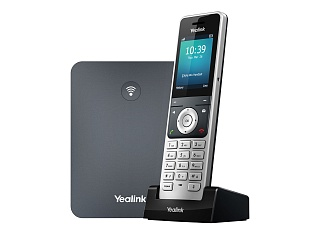

Yealink W76P
Цена носит информационный характер — актуальную стоимость и наличие уточняйте у менеджера.
Yealink W76P — это высокопроизводительная беспроводная телефонная IP-DECT-система, которая поддерживает до 10 DECT-трубок Yealink W56H. W76P — идеальное решение для малых и средних компаний, которое обеспечивает мобильность и гибкость коммуникаций, а также избавляет от необходимости в монтаже лишних проводов. W76P имеет большой набор функций, поддерживает до 10 SIP-аккаунтов и до 20 одновременных вызовов, что обеспечивает стабильную и удобную работу.
W76P обеспечивает профессиональный качественный звук как в условиях высокой нагрузки, так и при низких показателях параметров сети.
IP-DECT-система Yealink W76P поддерживает инициализацию и массовое развертывание с помощью Yealink Redirection Provisioning Service (RPS) и механизма загрузки, что позволяет реализовать Zero Touch Provisioning без каких-либо сложных ручных настроек. Простое развертывание, обслуживание и обновление экономит время и затраты предприятия на ИТ-инфраструктуру.
Гарантия — 18 месяцев.
Характеристики
Функции телефона
- Поддержка 20 одновременных вызовов
- Поддержка 10 трубок
- Поддержка 10 SIP-аккаунтов
- До 2 одновременных вызовов на трубку
- Поддержка 6 репитеров на каждую базовую станцию (RT30)
- Выбор трубки для приёма вызова
- Выбор трубки и номера для совершения вызова
- Пейджинг, интерком, автоответ, план набора
- Удержание вызова, трансфер, ожидание вызова
- 3-сторонняя конференция
- Переключение между вызовами
- Отключение микрофона, беззвучный режим, DND
- Отображение имени и номера Caller ID
- Анонимный вызов, отклонение анонимного вызова
- Переадресация: всегда/по занятости/при отсутствии ответа
- Быстрый набор, голосовая почта, повторный набор
- Message Waiting Indication (MWI)
- Музыка в ожидании (настраивается на сервере)
- Локальная телефонная книга до 1000 контактов (хранятся на базе)
- Удалённая телефонная книга LDAP/XML
- Поиск/импорт/экспорт телефонной книги
- Журнал вызовов на 100 записей: все/пропущенные/входящие/исходящие
- Peer-to-peer вызовы (по IP-адресу)
- Блокировка клавиатуры, экстренный вызов
- Адресная книга и журнал вызовов Broadsoft
- Функция синхронизации ключей Broadworks
- Совместное использование вызовов (SCA)
- Action URI
- XML-браузер
Персонализация
- 9 мелодий звонка
- Скринсейвер
- Многоязычный пользовательский интерфейс
Управление
- Autoprovision через TFTP/FTP/HTTP/HTTPS/RPS/PnP
- Обновление ПО трубки по каналу DECT (OTA, Over-The-Air)
- Конфигурация: браузер/телефон/Autoprovision
- Экспорт системного и сетевого лога
Настройки звука
- Full-duplex (полнодуплексная) громкая связь
- Совместимость со слуховыми аппаратами (HAC)
- Управление громкостью: 5 уровней
- Управление громкостью вызова: 5 уровней + отключение
- Несколько предупредительных сигналов
- Звуковое предупреждение о низком уровне заряда батареи
- DTMF
- Широкополосные кодеки: AMR-WB (опционально), G.722
- Узкополосные кодеки: PCMU, PCMA, G.726, G.729, G.729A, iLBC
- VAD, CNG, AGC, PLC, AJB
- AEC (поддерживается W56H)
- Поддержка VQ-RTCPXR (RFC6035), RTCP-XR
Сетевые характеристики
- SIP v1 (RFC2543), v2 (RFC3261)
- SNTP/NTP
- VLAN (802.1Q/P)
- 802.1X, LLDP
- STUN Client (NAT Traversal)
- UDP/TCP/TLS
- Режимы работы с сетью: статический/DHCP
- Поддержка резервирования подключения к АТС
Безопасность
- Безопасность транспортного уровня (TLS)
- HTTPS (сервер/клиент), SRTP (RFC3711) (Внимание! В продуктах, предназначенных для стран-участников Таможенного союза, данный функционал отсутствует)
- Дайджест-аутентификация
- Безопасный файл конфигурации с помощью шифрования AES
- Трёхуровневый режим настройки: Admin/Var/User
DECT
- Рабочая частота: 1880 - 1900 МГц (Европа), 1920 - 1930 МГц (Америка)
- Стандарт DECT: CAT-iq 2.0
Физические характеристики
- 1 x RJ45 Ethernet-порт 10/100 Мбит/с
- PoE (Power over Ethernet, IEEE 802.3af), класс 1
- Порт 3,5 мм для гарнитуры
- Зона покрытия внутри помещения: 50 м (в идеальных условиях)
- Зона покрытия вне помещения: 300 м (в идеальных условиях)
- Время работы в режиме ожидания: до 400 часов (в идеальных условиях)
- Время работы в режиме разговора: до 30 часов (в идеальных условиях)
- Цветной дисплей 2,4" с разрешением 240 x 320
- Настольная или настенная установка
- ЖК-дисплей с подсветкой, подсветка клавиш
- Энергосберегающий режим ECO/ECO+
- Клавиатура с подсветкой, 25 клавиш: 12 кнопок номеронабирателя, 5 кнопок навигации, 2 программируемые кнопки, 6 функциональных кнопок, 6 кнопок быстрого набора
- 3 LED-индикатора
- Зарядная подставка для трубки
- USB-адаптер питания для зарядной подставки: вход 100-240 В, выход 5 В, 0,6 А
- Адаптер питания для базовой станции: вход 100-240 В, выход 5 В, 0,6 А
- Размер трубки: 175 х 53 х 20,3 мм
- Размер базы: 130 х 100 х 25,1 мм
- Рабочая влажность: 10-95%
- Рабочая температура: -10-45 °C